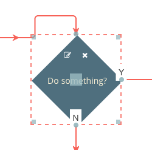

This is a port of the Flowchart Builder application that demonstrates the Toolkit's React integration.

This page gives you an in-depth look at how the application is put together.
This demonstration uses JSX files and ES2015. To transpile these to ES5, we use Babel.
These are the package.json entries we use:
"devDependencies":{
...
"babel-core": "^6.22.1",
"babel-loader": "^6.2.10",
"babel-preset-es2015": "^6.22.0",
"babel-preset-react": "^6.22.0",
...
}
This is the full package.json for the demonstration:
{
"name": "jsplumbtoolkit-react",
"version": "1.0.0",
"description": "Integration between jsPlumb Toolkit and React",
"main": "index.js",
"author": "jsPlumb <hello@jsplumbtoolkit.com> (https://jsplumbtoolkit.com)",
"license": "Commercial",
"dependencies": {
"react": "^15.4.2",
"react-dom": "^15.4.2",
"jsplumbtoolkit": "file:../../jsplumbtoolkit.tgz"
},
"devDependencies": {
"babel-core": "^6.22.1",
"babel-loader": "^6.2.10",
"babel-preset-es2015": "^6.22.0",
"babel-preset-react": "^6.22.0",
"grunt": "^1.0.1",
"grunt-webpack": "^1.0.11",
"webpack": "^1.14.0",
"webpack-dev-server": "^1.14.1"
}
}
Note that we import the jsPlumb Toolkit via a local file reference to the Toolkit package, which is included in licensed downloads.
This is the config file we use to setup Webpack to bundle our demonstration:
var path = require('path');
var webpack = require('webpack');
module.exports = {
entry: './src/index.js',
output: {
path: path.join(__dirname, "dist"),
filename: 'bundle.js'
},
module: {
loaders: [
{
test: /.jsx?$/,
loader: 'babel-loader',
exclude: /node_modules/,
query: {
presets: ['es2015', 'react']
}
}
]
},
};
<link href="//maxcdn.bootstrapcdn.com/bootstrap/3.2.0/css/bootstrap.min.css" rel="stylesheet">
<link href="node_modules/font-awesome/css/font-awesome.min.css" rel="stylesheet">
<link rel="stylesheet" href="node_modules/jsplumbtoolkit/dist/css/jsplumbtoolkit-defaults.css">
<link rel="stylesheet" href="node_modules/jsplumbtoolkit/dist/css/jsplumbtoolkit-demo.css">
<link rel="stylesheet" href="app.css">
Font Awesome, Bootstrap, jsplumbtoolkit-demo.css, and app.css are used for this demo and are not jsPlumb Toolkit requirements. jsplumbtoolkit-defaults.css is recommended for
all apps using the Toolkit, at least when you first start to build your app. This stylesheet contains sane defaults for the various widgets in the Toolkit.
We use Webpack to create a bundle for the demonstration - JS dependencies are the dependencies section of package.json:
"dependencies": {
"react": "^15.5.0",
"react-dom": "^15.5.0",
"jsplumbtoolkit": "file:../../jsplumbtoolkit.tgz"
}
jsPlumb has been tested against versions 15.4.2 and 15.5.0 of React.
There are four templates used by the app - one each for the node types of Question, Action and Output, and one
for the Start node. These are contained in the templates.html file, which is imported into the page via this
script tag:
<script type="text/x-jtk-templates" src="templates.html"></script>
The templates look like this:
Start
<script type="jtk" id="tmplStart">
<div style="left:${left}px;top:${top}px;width:${w}px;height:${h}px;" class="flowchart-object flowchart-start">
<div style="position:relative">
<svg:svg width="${w}" height="${h}">
<svg:ellipse cx="${w/2}" cy="${h/2}" rx="${w/2}" ry="${h/2}"></svg:ellipse>
<svg:text text-anchor="middle" x="${ w / 2 }" y="${ h / 2 }" dominant-baseline="central">${text}</svg:text>
</svg:svg>
</div>
<jtk-source port-type="start" filter="svg *" filter-negate="true"></jtk-source>
</div>
</script>
The Start node consists of an ellipse with a text label centered inside of it. Note here how all SVG elements are required to be declared in the svg: namespace. This is a requirement of Rotors and would not necessarily apply if you were using some other template engine.
In this template we can see the w, h, left and top values from the node's data being used not just to position the element but also to provide appropriate values for the ellipse and text label.
The jtk-source element declares that this node is an edge source, of type start (the port-type attribute specifies this). The filter attribute instructs the Toolkit to enable drag only from some element that is not a child of an svg element, but then filter-negate is true: the result is that dragging will begin only from a descendant of the svg element. What this means visually is that the user will not be able to start a drag from the whitespace surrounding the ellipse.
Action
<script type="jtk" id="tmplAction">
<div style="left:${left}px;top:${top}px;width:${w}px;height:${h}px;" class="flowchart-object flowchart-action">
<div style="position:relative">
<div class="node-edit node-action">
<i class="fa fa-pencil-square-o"></i>
</div>
<div class="node-delete node-action">
<i class="fa fa-times"></i>
</div>
<svg:svg width="${w}" height="${h}">
<svg:rect x="0" y="0" width="${w}" height="${h}"></svg:rect>
<svg:text text-anchor="middle" x="${w/2}" y="${h/2}" dominant-baseline="central">${text}</svg:text>
</svg:svg>
</div>
<jtk-target port-type="target"></jtk-target>
<jtk-port port-type="source"></jtk-port>
</div>
</script>
Once again we use the position and dimensions for the node's main container as well as its SVG elements. Action nodes are configured as both edge sources and targets.
Question
<script type="jtk" id="tmplQuestion">
<div style="left:${left}px;top:${top}px;width:${w}px;height:${h}px;" class="flowchart-object flowchart-question">
<div style="position:relative">
<div class="node-edit node-action">
<i class="fa fa-pencil-square-o"></i>
</div>
<div class="node-delete node-action">
<i class="fa fa-times"></i>
</div>
<svg:svg width="${w}" height="${h}">
<svg:path d="M ${w/2} 0 L ${w} ${h/2} L ${w/2} ${h} L 0 ${h/2} Z"></svg:path>
<svg:text text-anchor="middle" x="${w/2}" y="${h/2}" dominant-baseline="central">${text}</svg:text>
</svg:svg>
</div>
<jtk-port port-id="no" port-type="noSource"></jtk-port>
<jtk-port port-id="yes" port-type="yesSource"></jtk-port>
<jtk-target port-type="target"></jtk-target>
</div>
</script>
The Question node draws a diamond, and declares itself to be an edge target. Unlike the Action node, though, this node adds two Endpoints, via jtk-port elements, instead of declaring that the entire element is an edge source.
Output
<script type="jtk" id="tmplOutput">
<div style="left:${left}px;top:${top}px;width:${w}px;height:${h}px;" class="flowchart-object flowchart-output">
<div style="position:relative">
<div class="node-edit node-action">
<i class="fa fa-pencil-square-o"></i>
</div>
<div class="node-delete node-action">
<i class="fa fa-times"></i>
</div>
<svg:svg width="${w}" height="${h}">
<svg:rect x="0" y="0" width="${w}" height="${h}"></svg:rect>
<svg:text text-anchor="middle" x="${w/2}" y="${h/2}" dominant-baseline="central">${text}</svg:text>
</svg:svg>
</div>
<jtk-target port-type="target"></jtk-target>
</div>
</script>
The Output node is configured to be a connection target only.
The parameters passed in to the Toolkit's constructor are:
const toolkitParams = {
nodeFactory: function (type, data, callback) {
jsPlumbToolkit.Dialogs.show({
id: "dlgText",
title: "Enter " + type + " name:",
onOK: function (d) {
data.text = d.text;
// if the user entered a name...
if (data.text) {
// and it was at least 2 chars
if (data.text.length >= 2) {
// set an id and continue.
data.id = jsPlumbToolkitUtil.uuid();
callback(data);
}
else
// else advise the user.
alert(type + " names must be at least 2 characters!");
}
// else...do not proceed.
}
});
},
beforeStartConnect:function(node, edgeType) {
// limit edges from start node to 1. if any other type of node, return
return (node.data.type === "start" && node.getEdges().length > 0) ? false : { label:"..." };
}
}
This is done inside the template for the demo component:
<JsPlumbToolkitComponent ref="toolkit" url={"data/flowchart-1.json"} renderParams={renderParams}
toolkitParams={toolkitParams} view={view}/>
The parameters passed in to the Surface's constructor are:
const renderParams = {
// Layout the nodes using an absolute layout
layout: {
type: "Absolute"
},
events: {
canvasClick: function (e) {
toolkitComponent.toolkit.clearSelection();
},
edgeAdded:function(params) {
if (params.addedByMouse) {
_editLabel(params.edge, true);
}
},
nodeDropped:function(info) {
console.log("node ", info.source.id, "dropped on ", info.target.id);
},
modeChanged:function (mode) {
demoComponent.setMode(mode);
}
},
lassoInvert:true,
elementsDroppable:true,
consumeRightClick: false,
dragOptions: {
filter: ".jtk-draw-handle, .node-action, .node-action i"
}
}
...again, via the template for the demo component, as shown above.
The view contains the definitions of node/edge appearance and behaviour:
const view = {
nodes: {
"start": {
template: "tmplStart"
},
"selectable": {
events: {
tap: function (params) {
toolkitComponent.toolkit.toggleSelection(params.node);
}
}
},
"question": {
parent: "selectable",
template: "tmplQuestion"
},
"action": {
parent: "selectable",
template: "tmplAction"
},
"output":{
parent:"selectable",
template:"tmplOutput"
}
},
// There are two edge types defined - 'yes' and 'no', sharing a common
// parent.
edges: {
"default": {
anchor:"AutoDefault",
endpoint:"Blank",
connector: ["Flowchart", { cornerRadius: 5 } ],
paintStyle: { strokeWidth: 2, stroke: "#f76258", outlineWidth: 3, outlineStroke: "transparent" }, // paint style for this edge type.
hoverPaintStyle: { strokeWidth: 2, stroke: "rgb(67,67,67)" }, // hover paint style for this edge type.
events: {
"dblclick": function (params) {
jsPlumbToolkit.Dialogs.show({
id: "dlgConfirm",
data: {
msg: "Delete Edge"
},
onOK: function () {
toolkitComponent.toolkit.removeEdge(params.edge);
}
});
}
},
overlays: [
[ "Arrow", { location: 1, width: 10, length: 10 }],
[ "Arrow", { location: 0.3, width: 10, length: 10 }]
]
},
"connection":{
parent:"default",
overlays:[
[
"Label", {
label: "${label}",
events:{
click:function(params) {
_editLabel(params.edge);
}
}
}
]
]
}
},
ports: {
"start": {
edgeType: "default"
},
"source": {
maxConnections: -1,
edgeType: "connection"
},
"target": {
maxConnections: -1,
isTarget: true,
dropOptions: {
hoverClass: "connection-drop"
}
}
}
};
The ready callback in src/index.js is responsible for initialising the application, by first creating and rendering a demo coomponent,
and storing a reference to the Toolkit component it created:
import React from 'react';
import ReactDOM from 'react-dom';
import JsPlumbToolkitComponent from './jsplumb-toolkit.jsx';
import JsPlumbToolkitMiniviewComponent from './jsplumb-miniview.jsx';
import { jsPlumbToolkit, Surface, jsPlumb } from 'jsplumbtoolkit';
import DemoNodePalette from './node-palette.jsx';
jsPlumbToolkit.ready(() => {
...
const mainElement = document.querySelector("#jtk-demo-flowchart"),
canvasElement = mainElement.querySelector(".jtk-demo-canvas"),
miniviewElement = mainElement.querySelector(".miniview"),
nodePaletteElement = mainElement.querySelector(".node-palette");
...
const demoComponent = ReactDOM.render(<DemoComponent/>, canvasElement);
const toolkitComponent = demoComponent.toolkit;
...
We then create a node palette component and a miniview component:
// helper functions for the drag/drop node palette
var typeExtractor = function(el) { return el.getAttribute("data-node-type") };
var dataGenerator = function (type) { return { w:120, h:80 }; };
const nodePalette = ReactDOM.render(
<DemoNodePalette toolkitComponent={toolkitComponent} selector={"li"} typeExtractor={typeExtractor} container={nodePaletteElement} dataGenerator={dataGenerator}/>
, nodePaletteElement);
const miniview = ReactDOM.render(
<JsPlumbToolkitMiniviewComponent toolkitComponent={toolkitComponent}/>, document.querySelector(".miniview")
)
and then there's a bunch of stuff discussed in behaviour below (node edit, delete etc).
Data for this application is loaded by the demo component's template:
<JsPlumbToolkitComponent ref="toolkit" url={"data/flowchart-1.json"} renderParams={renderParams}
toolkitParams={toolkitParams} view={view}/>
...via the url prop. But toolkitComponent.toolkit gives you a reference to the underlying jsPlumbToolkitInstance, if you need it.
We saw above that a nodePalette is created at initialisation time. The JsPlumbToolkitPaletteComponent is an abstract class, which you need to
subclass in order to provide a render method. Our subclass (in src/node-palette.jsx) looks like this:
import React from 'react';
import JsPlumbToolkitPaletteComponent from './jsplumb-toolkit-palette.jsx';
class DemoNodePalette extends JsPlumbToolkitPaletteComponent {
render() {
return <ul>
<li data-node-type="question" title="Drag to add new">
<i className="icon-tablet"></i>Question
</li>
<li data-node-type="action" title="Drag to add new">
<i className="icon-eye-open"></i>Action
</li>
<li data-node-type="output" title="Drag to add new">
<i className="icon-eye-open"></i>Output
</li>
</ul>
}
}
export default DemoNodePalette;
In the original FlowchartBuilder demo, there are three pieces of behaviour that we need to code that are not completely handled for us by the Toolkit:
These exist in this React demo, too, and are handled largely the same way as in the non-React demo
// change a question or action's label
jsPlumb.on(canvasElement, "tap", ".node-edit", function () {
// getObjectInfo is a method that takes some DOM element (this function's this is
// set to the element that fired the event) and returns the toolkit data object that
// relates to the element. it ascends through parent nodes until it finds a node that is
// registered with the toolkit.
var info = toolkitComponent.surface.getObjectInfo(this);
jsPlumbToolkit.Dialogs.show({
id: "dlgText",
data: info.obj.data,
title: "Edit " + info.obj.data.type + " name",
onOK: function (data) {
if (data.text && data.text.length > 2) {
// if name is at least 2 chars long, update the underlying data and
// update the UI.
toolkitComponent.toolkit.updateNode(info.obj, data);
}
}
});
});
This application uses the Toolkit's dialogs import to manage simple interactions with data members such as this. Your application may choose to use a different mechanism.
jsPlumb.on(canvasElement, "tap", ".node-delete", function () {
var info = toolkitComponent.surface.getObjectInfo(this);
jsPlumbToolkit.Dialogs.show({
id: "dlgConfirm",
data: {
msg: "Delete '" + info.obj.data.text + "'"
},
onOK: function () {
toolkitComponent.toolkit.removeNode(info.obj);
}
});
});
This is handled in the same way by this demo as it is in the original FlowchartBuider.
We register a dblclick listener on edges by providing it as an event handler to the View, on the edge type that
acts as the parent type for all others.
...
edges: {
"default": {
connector: ["Flowchart", { cornerRadius: 5 } ],
paintStyle: { lineWidth: 2, strokeStyle: "#f76258", outlineWidth: 3, outlineColor: "transparent" },
hoverPaintStyle: { lineWidth: 2, strokeStyle: "rgb(67,67,67)" },
events: {
"dblclick": (params:any) => {
Dialogs.show({
id: "dlgConfirm",
data: {
msg: "Delete Edge"
},
onOK: function (params) {
toolkitComponent.toolkit.removeEdge(params.edge);
}
});
}
},
...
All Edges except those from a Start node are set to be of type connection, which is defined in the view as follows:
"connection":{
parent:"default",
overlays:[
[ "Label", {
label: "${label}",
events:{
click:function(params) {
_editLabel(params.edge);
}
}
}]
]
}
We define a click event handler on the Label overlay which edits the label for the Edge.
The helper function is:
var _editLabel = function(edge, deleteOnCancel) {
jsPlumbToolkit.Dialogs.show({
id: "dlgText",
data: {
text: edge.data.label || ""
},
onOK: function (data) {
toolkitComponent.toolkit.updateEdge(edge, { label:data.text || "" });
},
onCancel:function() {
if (deleteOnCancel) {
toolkitComponent.toolkit.removeEdge(edge);
}
}
});
};
To resize or drag a node first you must either click on it, or use the lasso (described below) to select it. A selected node looks like this:

The dotted line and drag handles that are added to a selected Node are put there by the Tookit's drawing tools. It listens to the Toolkit's select/deselect events and decorates UI elements accordingly. These tools are discussed in detail on this page.
The drawing tools are initialized with this line of code (inside the ready callback):
new jsPlumbToolkit.DrawingTools({
renderer: toolkitComponent.surface
});
You pass them the instance of the Surface widget you're working with (which we get from the Toolkit component)
Nodes can be dragged only by the square in the center of the node. This is achieved by setting a filter on the
dragOptions parameter on the render call:
dragOptions: {
handle: ".jtk-draw-drag"
}
jtk-draw-drag is the classname of the square that the drawing tools place in the center of a selected node.
Resizing is handled automatically by the drawing tools. By default, these tools will change the w, h, left and top values in a node's data, but this can be changed.
When a node's data is updated the drawing tools call the appropriate update method on the underlying Toolkit. The changes will be reflected immediately in the DOM.
Nodes can be selected with a left-click (or tap on a touch device; tap is a better event to choose in general because the
Toolkit abstracts out the difference between mouse devices and touch devices and presents click events as tap events
on non touch devices). This is configured in the view parameter to the render call. In this application,
Nodes of type selectable have the capability enabled with this code:
"selectable": {
events: {
tap: (params) => {
this.toolkit.toggleSelection(params.node);
}
}
}
The tap event (discussed here) is preferable to click, as it ensures the application responds only to true clicks on devices with a mouse, and also avoids the delay that some vendors introduce to a click event on touch devices.
Lasso selection is enabled by default on the Surface widget.
To activate the lasso, click the pencil icon in the toolbar:

To zoom to extents, click the Home icon in the toolbar.
ControlsComponent handles clicks on these icons:
class ControlsComponent extends React.Component {
render() {
return <div className="controls" ref={ (c) => this._container = c }>
<i className="fa fa-arrows selected-mode" data-mode="pan" title="Pan Mode"></i>
<i className="fa fa-pencil" data-mode="select" title="Select Mode"></i>
<i className="fa fa-home" data-reset title="Zoom To Fit"></i>
</div>
}
componentDidMount() {
// pan mode/select mode
jsPlumb.on(this._container, "tap", "[data-mode]", function () {
toolkitComponent.surface.setMode(this.getAttribute("data-mode"));
});
// on home button click, zoom content to fit.
jsPlumb.on(this._container, "tap", "[data-reset]", function () {
toolkitComponent.toolkit.clearSelection();
toolkitComponent.surface.zoomToFit();
});
}
setMode(mode) {
jsPlumb.removeClass(this._container.querySelectorAll("[data-mode]"), "selected-mode");
jsPlumb.addClass(this._container.querySelectorAll("[data-mode='" + mode + "']"), "selected-mode");
}
}
The lasso works in two ways: when you drag from left to right, any node that intersects your lasso will be selected. When you drag from right to left, only nodes that are enclosed by your lasso will be selected.

The Surface widget automatically exits select mode once the user has selected something. In this application we also listen to clicks on the
whitespace in the widget and switch back to pan mode when we detect one. This is the events argument to the render call:
events: {
...
canvasClick: function() {
toolkitComponent.toolkit.clearSelection();
}
...
}
clearSelection clears the current selection and switches back to Pan mode.
The dialogs used in this app are part of the jsPlumb Toolkit core. They provide a simple abstraction around the business of getting input from the user and dealing with it; they're not necessarily fully-featured enough for all applications.
To initialize the dialogs, we call jsPlumbToolkit.Dialogs.initialize, with an appropriate selector for the templates for your dialogs (see below for an explanation of this).
jsPlumbToolkit.Dialogs.initialize({
selector: ".dlg"
});
Each dialog has a template in the HTML, with some class name that you matched in the selector argument to the initialize call above:
<script type="jtk" class="dlg" id="dlgViewQuery" title="Edit Query">
<textarea class="txtViewQuery" jtk-focus jtk-att="query">${query}</textarea>
</script>
These templates use the same template engine as the Surface renderer, so in this example you can see we've extracted query from the View node's data, and injected it into the textarea. But what might not be immediately obvious is the purpose of the jtk-att attribute: it tells the dialog handler that the value of this textarea should be passed to the OK handler, using the key query.
Note also in the above example, the jtk-focus attribute: this tells the dialog handler that the textarea should be given the focus when the dialog first opens.
This example is the dialog that is shown when you edit a View query. We provide the id of the template to use for the dialog, and we provide the View node's data as the backing data for the dialog. Then we provide an onOK callback:
jsPlumbToolkit.Dialogs.show({
id:"dlgViewQuery",
data:info.obj.data,
onOK:(data:any) => {
// update data
toolkit.updateNode(info.obj, data);
// update UI
info.el.querySelectorAll(".view-details")[0].innerHTML = data.query;
}
});
The data argument to the onOK callback consists of an object whose key value pairs are determined by the jtk-att attributes found in the template. Recall that above we had a textarea with jtk-att:"query". This means that the data argument to onOK looks like this:
{
query:"the contents of the text area"
}
The list of supported input types is:
If you set a title attribute on a dialog's template, that value will be used for the title of the dialog.
Alternatively, you can provide a title parameter to the show call.
There are three lifecycle callbacks supported: